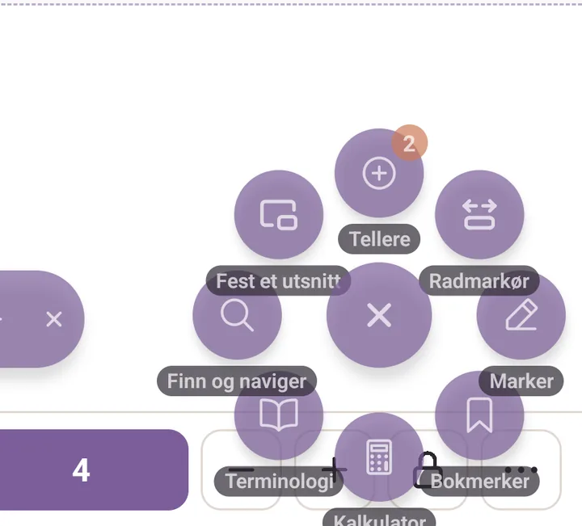
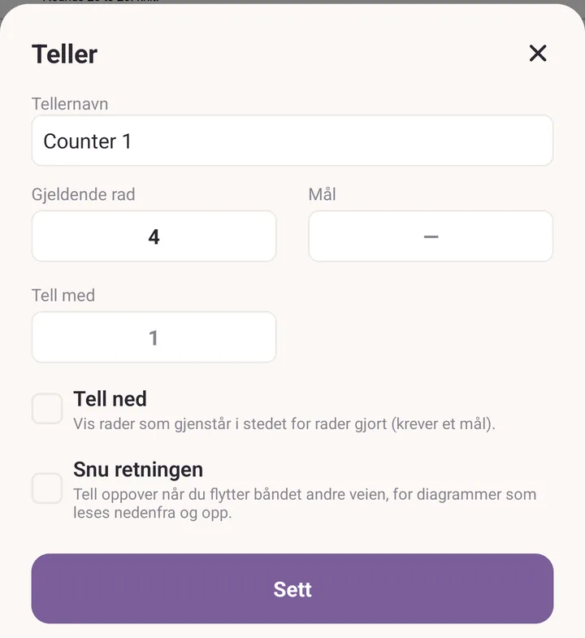
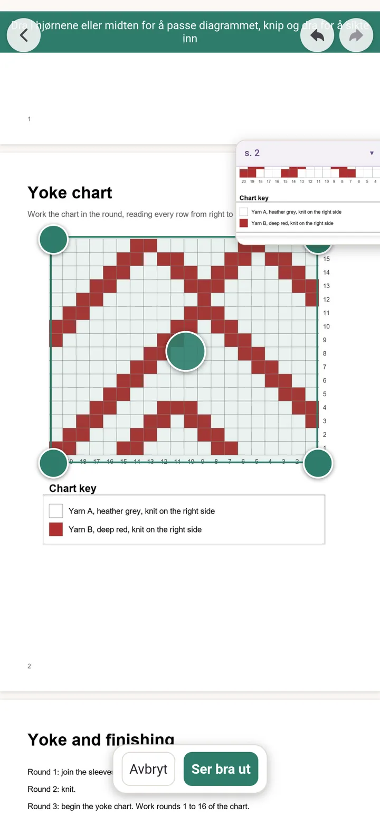
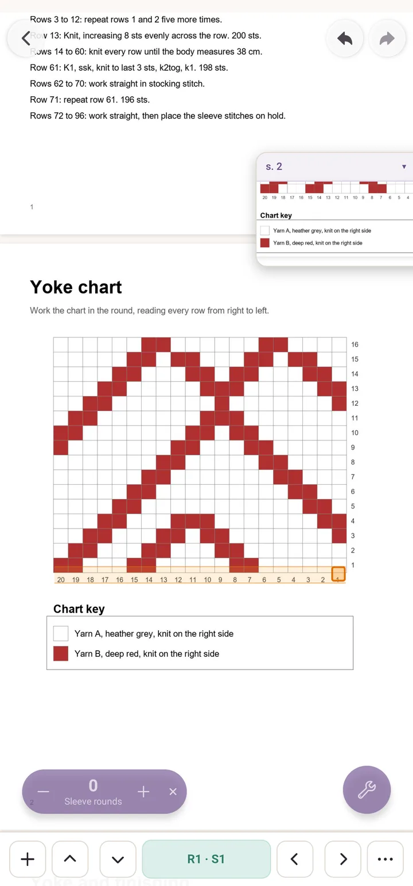
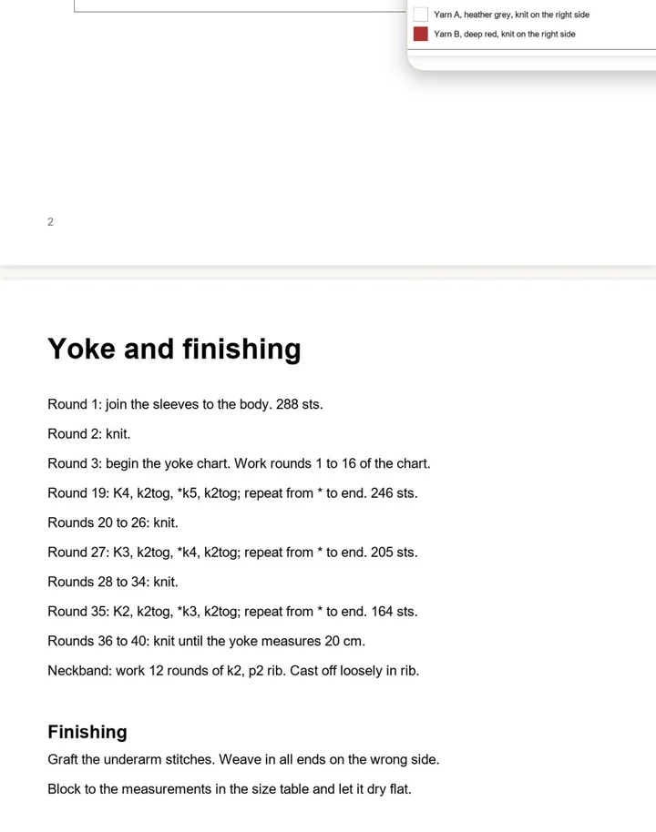

Veiledning: les en oppskrift
Når du er ferdig med dette, har du en PDF-oppskrift som holder plassen din rad for rad, et flerfargediagram inne i den som du kan følge maske for maske, og tegnforklaringen svevende på skjermen mens du blar.
Før du begynner: ha en PDF-oppskrift på enheten, i Filer, Drive, Nedlastinger eller hvor som helst du kan velge fra.
1. Spor en PDF rad for rad
Trykk Oppskrifter, så Importer, og velg PDF-en din.
Trykk på oppskriftskortet, og trykk så Åpne.
Trykk på den runde flytende knappen, og trykk Radmarkør.

Åtte verktøy, hvert med navnet sitt under. Radmarkør er den du vil ha. Arket Sporere åpner seg fordi det ikke er noe å følge ennå. Trykk Radteller.
Dra båndet ned på raden du arbeider med. De to knappene til høyre for radnummeret gjør båndet lavere eller høyere.
Dra båndet etter midten. De svake hjelpelinjene gjør det lettere å sikte inn.
Bruk pilene opp og ned på linjen for å gå rad for rad. Ned flytter til neste rad og teller opp.
Trykk på radnummeret for å åpne Teller hvis du vil gi den et navn eller sette Mål, så den leser 24 / 60 mens du går. Resten, radpåminnelser inkludert, ligger i PDF-verktøy.

2. Følg et diagram som er trykt i PDF-en
Trykk på plusstegnet til venstre på sporingslinjen for å åpne Sporere.
Trykk Diagram.
Dra i hjørnene og midten av boksen til den ligger nøyaktig over det trykte diagrammet. Knip og dra siden under for å sikte den inn.
Trykk Ser bra ut.

Bare hjørnene og grepet i midten tar imot fingeren din. Alt annet drar og kniper fortsatt siden. Arket Diagramsporing åpner seg. Fyll inn Masker bredt og Rader, og trykk på hjørnet der rad 1, maske 1 begynner under Starthjørne. Strikker du frem og tilbake? Huk av Rader veksler retning i tillegg. Trykk Lagre rutenett.
Linjen leser nå R1 · S1, og én rute på siden lyser opp. Pilene på siden går maske for maske, pilene opp og ned går rad for rad, og avlesningen sier Ferdig på den siste ruten.

3. Hold tegnforklaringen på skjermen
- Trykk på den flytende knappen, og så Fest et utsnitt.
- Ram inn tegnforklaringen med hjørnehåndtakene, og knip og dra siden for å få den innenfor rammen.
- Trykk Ser bra ut.
- Tegnforklaringen svever nå over oppskriften uansett hvor du blar. Dra den etter toppfeltet, endre størrelse fra hjørnet nede til høyre, og trykk på pilen i toppfeltet for å folde den sammen til en smal pille når den er i veien.

Hvis det går galt
- Båndet tegner en strek i stedet for å flytte seg. Linjalen er på. Én finger langs linjalen tegner, to fingre flytter oppskriften. Slå av linjalen inne i Marker.
- Diagramrutene ligger ikke på linje. Trykk på de tre prikkene på diagramlinjen for å åpne Diagramsporing igjen, og trykk Juster boksen og tilpass den på nytt. Vis rutenett i det samme arket legger svake rutelinjer over diagrammet, og de vises når du har zoomet nok inn til å se dem.
- Du hoppet bort da du trykte på toppfeltet i utsnittet. Det er snarveien tilbake til stedet utsnittet ble rammet inn. Purl spør først, så svar nei hvis du mente å dra.
Videre
- PDF-verktøy for alt annet i vifta.
- Oppskrifter for skrevne oppskrifter og dine egne diagrammer.